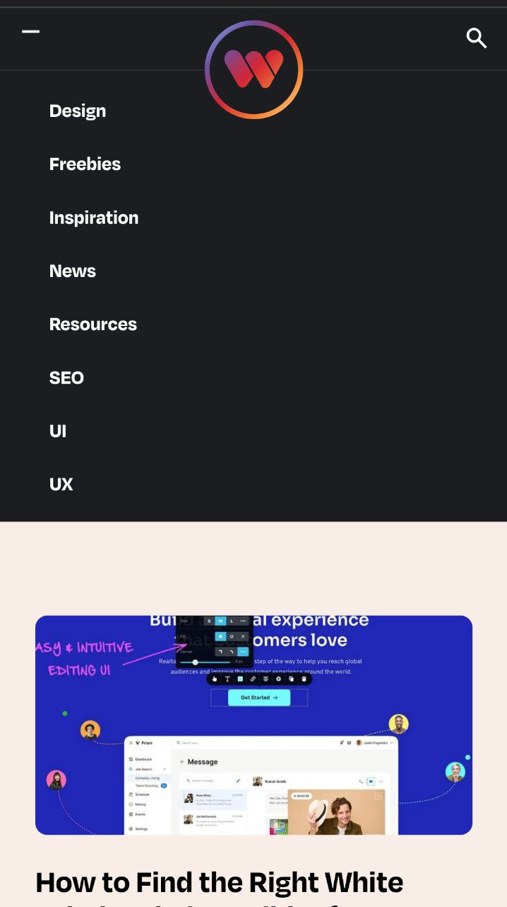

Visual Hierarchy
Family Search
familysearch.org
The website of Family Search has a main webpage that makes you know what is its goal.
It contains a GET STARTED button that calls you to action, if you are not a user yet, you can easily obtain a guide in how you can start to exploring your family's history achieving the website porpuse.
Contrast
Webdesigner Depot
webdesignerdepot.com Webdesigner Depot follows as planned the principle of contrast.
In this example we can see how the header is separated from the main content with colors that contrast one from each other. The font inside the header contrast with its background, this principle is followed in the main section making easy for the user to identify sections, icons, and information given.
Repetition
Notion
notion.so
Notion has a very good use of the principle repetition.
The idea of design in every page of their website is well planned, the colors, the structure, the illustrations, the font and the layout provides an identity well defined.